Setting up simulations¶
Mapping physical quantities to simulation parameters¶
Having a good grasp of how choosing lattice-Boltzmann parameters such as grid size, numerical viscosity and maximum velocity affects the results is essential for running simulations efficiently and for interpreting their results. The mapping between physical quantities describing a system and their corresponding counterparts in the simulation is often a source of unnecessary confusion. In this section, we will show how to do it and how different choices of various simulation parameters impact the precision of the results and simulation time.
Throughout this section, we will be working with a specific physical system that we will be using as an example. We choose a 2D system with the following parameters:
- width: 2 m
- height 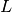: 1 m
- flow speed 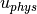: 10 m/s
- Reynolds number : 1000
We will now want to determine the lattice size , numerical viscosity and the lattice time step size in physical units.
In lattice units, a single time step of the simulation is by definition 1 lt, and the space between two lattice nodes is 1 lu.
The following simple relations will prove to be very useful in the next subsections:
- the lattice spacing:
- the lattice flow speed:
- the lattice viscosity:
Assuming a known lattice size and Reynolds number¶
Let’s choose a lattice of 101x201 nodes. This sets the lattice spacing to . We know the Reynolds number, which is 1000, but we need one more constraint to calculate the size of the time step and the numerical viscosity. The constraint we need is the maximum lattice flow speed. The flow speed can never exceed the lattice speed of sound 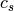, which is 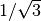 lu/lt for the D2Q9 lattice. It will in fact have to be much lower than that, since the Lattice Boltzmann model only works in the limit of low Mach numbers. The highest relatively safe value used in practice is 0.1 lu/lt, and this is what we are going to use for calculation. Setting:
we can easily calculate the time step size, which is and the lattice viscosity .
If we wanted to simulate a flow of a duration of 1 s, we would need 10000 iterations, which corresponds to approximately lattice node updates.
It is also easy to see that the size of the time step scales linearly with the maximum velocity, i.e. if we decrease the maximum flow speed 10 times, we will need to run the simulation 10 times longer to reach the physical time of 1s. We will also need to decrease the numerical viscosity 10 times in order to make sure we’re simulating the same physical system.
Assuming a known numerical viscosity and Reynolds number¶
Starting with a known numerical viscosity will some times make sense, as all
LB models have a limited range of viscosities for which they are stable. Let’s start
with a value of 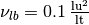 and 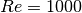 as above. We will need to determine
the lattice spacing and time step size. Using the lattice viscosity and lattice flow
speed equations we get, respectively: 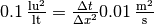
and , which we can easily solve to get
 and 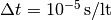.
and 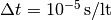.
To get a physical duration of 1 s, we thus need iterations on a lattice of or lattice node updates. The price to pay for the increased stability and precision of the simulation is a larger lattice and much longer simulation time.
By decreasing the viscosity by a factor of 10, we could increase both the step size and the time step size by a factor of 10, and thus cut the overall simulation time by a factor of 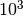 (or 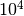 for 3D simulations).